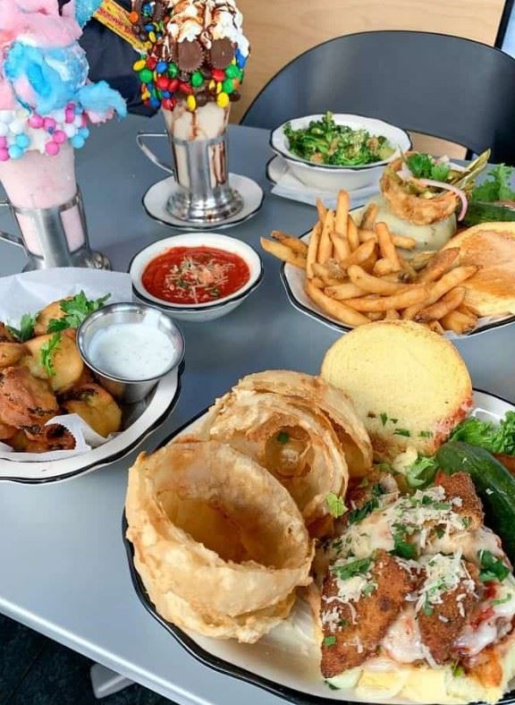
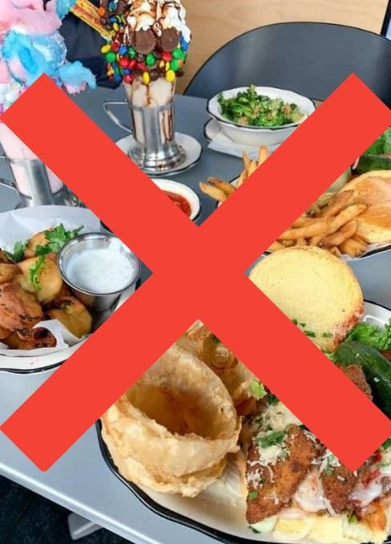

The scent of buttery popcorn and sweet churros filled the air the moment Patricia stepped through the turnstiles of Disneyland California. The park was a dizzying kaleidoscope of bright colors, cheerful music, and roaring crowds, but she wasn’t here for a normal vacation. She was on a mission to find her missing uncle. Standing under the shadow of the Main Street train station, she had a realization: the most logical way to track him down was to stake out his absolute favorite attractions. It felt like a much better alternative to wandering aimlessly into dangerous territory or risking her life in dark alleys. Besides, if she was going to be searching for hours, she might as well try to enjoy herself along the way. Unfolding a glossy park map, her eyes scanned the overwhelming list of attractions before locking onto a familiar name in New Orleans Square. She decided to head straight for his favorite boat ride, Pirates of the Caribbean. Navigating through the dense crowds, she finally merged into the dimly lit queue. The ride itself turned out to be an exhilarating escape. As her boat plunged down the sudden, dark drops into the pirate grottoes, a thrilling chill ran straight down her spine. The damp air and skeletal animatronics kept her heart racing, making her temporarily forget the gravity of her situation.
However, the excitement quickly faded once she stepped back out into the blinding California sun. After a long day of navigating the park and riding attractions, a sudden, sharp ache hit her. A massive, gaping hole opened up in her stomach, and she realized with sudden clarity that she was absolutely starving. Her eyes instantly darted toward a nearby outdoor café, captivated by the rich aroma of smoked turkey legs and hot fries. She took a step toward the food counter, but a wave of guilt stopped her dead in her tracks. She snapped herself back to reality, remembering why she was here in the first place. She had a critical mission to fulfill, and she couldn't afford to let her focus stray from finding her uncle. And yet, as her stomach let out another loud, demanding growl, the internal debate raged on. She was just so incredibly hungry....


| Eat Lunch | Don't Eat Lunch |